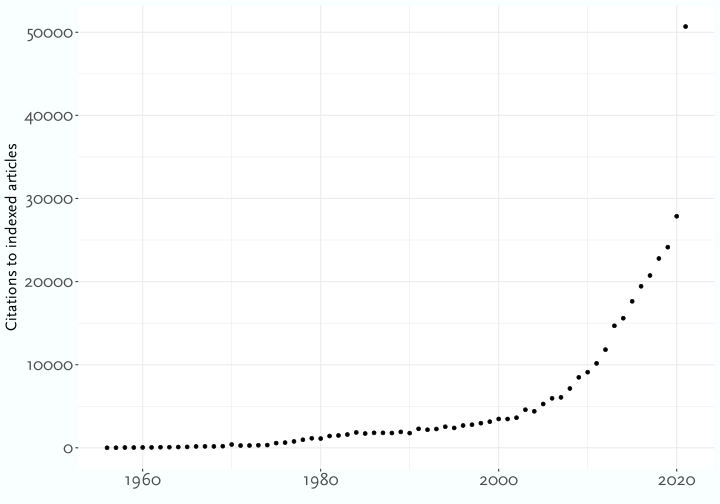
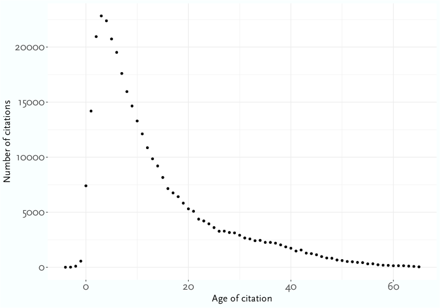
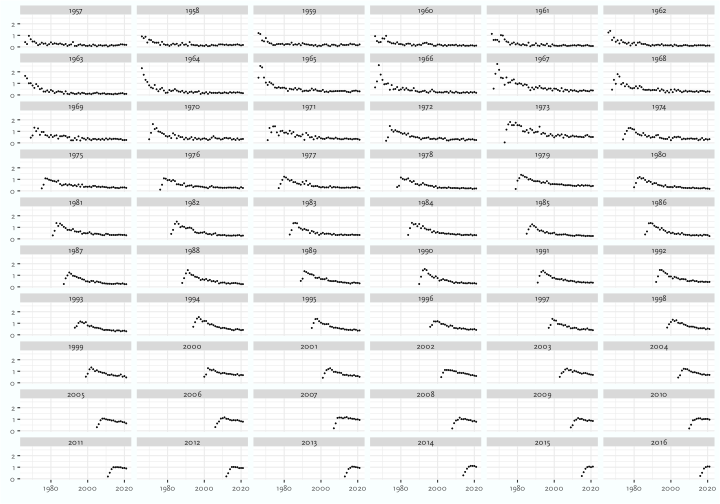
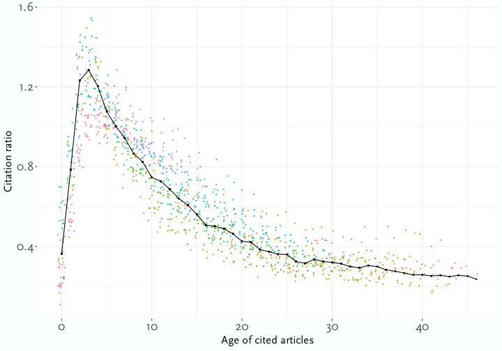
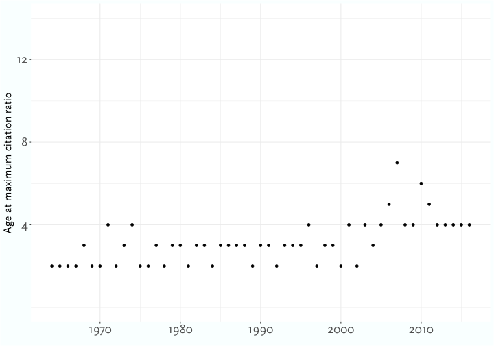

| Year | 18-29 | 30-44 | 45-59 | 60+ |
|---|---|---|---|---|
| 1972 | 0.474 | 0.356 | 0.355 | 0.307 |
| 1976 | 0.519 | 0.501 | 0.476 | 0.472 |
| 1980 | 0.505 | 0.399 | 0.412 | 0.434 |
| 1984 | 0.406 | 0.421 | 0.399 | 0.394 |
| 1988 | 0.472 | 0.456 | 0.427 | 0.494 |
| 1992 | 0.559 | 0.521 | 0.508 | 0.567 |
| 1996 | 0.606 | 0.541 | 0.538 | 0.524 |
| 2000 | 0.507 | 0.493 | 0.494 | 0.517 |
| 2004 | 0.543 | 0.466 | 0.485 | 0.457 |
| 2008 | 0.676 | 0.533 | 0.503 | 0.477 |
Age, Period, and Cohort Effects in Philosophy Journal Citations
Abstract
There are extremely strong age and period effects in citations in philosophy journals. The age effect is that citations are concentrated on articles published two to five years prior. The period effect is that recent years have seen an explosion in the number of articles published, and the number of citations per articles, so many articles are getting more citations per year than they ever had previously. But cohort effects are trickier to detect. In this note I argue that they exist. There are more citations to articles from eras of more dramatic change in philosophy, such as around 1970 and around 2010. And there are fewer citations to articles from periods of consolidation, especially in the late 1970s through the 1980s.
Introduction
This paper concerns citations of philosophy journal articles in other philosophy journal articles, and in particular, citations that are indexed in Web of Science. Via my home institution1, I downloaded the full citation records for one hundred prominent English language philosophy journals from the time Web of Science started indexing them. And I looked at how often each of those articles cited each other. One simple way to summarise some trends in this data set is to ask for any pair of years, how often are articles published in the first year cited in articles published in the second year. For instance, here are two simple facts about the set of citations.
- In 1993, articles published in 1980 were cited 62 times.
- In 2010, articles published in 2007 were cited 609 times.
Those numbers are very different; what could explain the change? There are three natural kinds of explanation available.
First, it could be an age effect. 2010 is only three years after 2007, while 1993 is thirteen years after 1980. Other things equal, articles are most frequently cited two to five years after publication. Before that they aren’t widely enough known to be cited; afterwards they are old news.
Second, it could be a period effect. There were many changes between 1993 and 2010. More journals came into existence. More journals that had already existed were added to the Web of Science index, and so got included in the dataset. Citation norms have been changing, and the average number of citations per article, and especially the average number of citations to journal articles per article, have been growing rapidly. All of these factors could, in principle, explain the difference between the two values.
Finally, it could be a cohort effect. Maybe there is something about philosophy in 1980 which made articles published then less likely to get cited than articles published in 2007. This kind of effect is both harder to detect in the data, and harder to understand how it could be possible.
The point of this paper is to argue that the results we see, like the two values shown above, are best explained by looking at all three effects. I’ll briefly note the evidence for age and period effects, because these are enormous and mostly obvious. Then the bulk of the paper will argue that there is still a cohort effect after accounting for age and period effects, and suggesting some explanations for why such an effect exists.
Age, Period, Cohort
Age, period, and cohort effects are most commonly considered when investigating human populations. Imagine that you are investigating some historical records, and see something surprising when you look at teenagers in the late 1960s. What could explain the surprising result? It could be an age effect: because they were teenagers. It could be a period effect: because it was the 1960s. Or it could be a cohort effect: because they were boomers.
There are two big technical problems with teasing these explanations apart. One is that a single data point doesn’t distinguish between the three possible explanations. Another is that because there is a linear relationship between the variables, since age is just period minus cohort, simple statistical tests don’t always tease the effects apart.2
It is, however, important to distinguish the effects. Table 1 shows the Democratic share of the two party vote in US Presidential elections from 1972-2008.3
The period effects in Table 1 are rather pronounced. Democrats did better in their worst group in the landslide win of 2008 than they did with their best group in the landslide loss of 1972. There also looks to be a pronounced age effect. In many years, including 1972 and 2008, the Democratic share is strictly decreasing as one goes from younger to older voters. This looks like evidence for the conventional wisdom that voters get more conservative as they get older.4 But looking at the middle rows of the table complicates this story. In 1988, 1992, and 2000, Democrats did better among voters over 60 than they did among any other age group. Why didn’t the familiar age effects show up?
One hypothesis is that there is a large cohort effect here. Roughly, people whose formative political experiences was the Great Depression were (on average) much more disposed to vote for Democrats than people in other cohorts. This kind of cohort based story could be put forward either as alternative to the posited age effect, maybe the 2008 results just show that each generation was a little less conservative than the one before it, or as a supplement to it. That is, one might hold both that older people are more conservative than younger people, and that people who came of age in the Depression are less conservative than other people. The results we see, where Dukakis (in 1988) and Gore (in 2000) do almost equally as well with young and old voters, might be the interaction of these effects.5
That’s the kind of explanation I’ll be offering for citation trends. The age and period effects are substantial, but they need to be supplemented with a cohort effect to fully understand the trends.
Methodology
As noted above, the study here is based on the Web of Science database, which my institution makes available with a subscription. That is, it lets members of the institution download the full database for research purposes. This is a rather large collection of files; after de-compression they come to over a terabyte. I selected records that were marked as articles (as opposed to discussion notes, book reviews, editorial matters, and so on), and whose category was either Philosophy or History & Philosophy of Science. I then selected by hand the hundred journals with the most entries which were (a) primarily English language, (b) not primarily history of science and (c) broadly ‘analytic’ rather than ‘continental’. These were somewhat subjective choices, but the result was a reasonable collection of the journals which are most important for telling the story of a certain kind of philosophy over the last several decades. The list of journals, as well as the dates covered by the index, is shown in Table 2.
| Journal | Articles | First Year | Most Recent Year |
|---|---|---|---|
| Acta Philosophica | 202 | 2009 | 2021 |
| American Philosophical Quarterly | 1755 | 1964 | 2021 |
| Analysis | 2538 | 1975 | 2021 |
| Analytic Philosophy | 121 | 2016 | 2021 |
| Archiv Fur Geschichte Der Philosophie | 648 | 1975 | 2021 |
| Australasian Journal Of Philosophy | 1583 | 1975 | 2021 |
| Biology & Philosophy | 1064 | 1988 | 2021 |
| British Journal For The History Of Philosophy | 679 | 2007 | 2021 |
| British Journal For The Philosophy Of Science | 1465 | 1956 | 2021 |
| British Journal Of Aesthetics | 1337 | 1975 | 2021 |
| Bulletin Of Symbolic Logic | 76 | 2003 | 2021 |
| Canadian Journal Of Philosophy | 1470 | 1975 | 2021 |
| Croatian Journal Of Philosophy | 322 | 2007 | 2021 |
| Dialogue | 1440 | 1975 | 2021 |
| Economics And Philosophy | 99 | 2003 | 2021 |
| Episteme | 481 | 2005 | 2021 |
| Ergo | 213 | 2016 | 2021 |
| Erkenntnis | 1480 | 2000 | 2021 |
| Ethical Theory And Moral Practice | 776 | 2008 | 2021 |
| Ethics | 1554 | 1956 | 2021 |
| European Journal For Philosophy Of Science | 379 | 2011 | 2021 |
| European Journal Of Philosophy | 788 | 1998 | 2021 |
| Heythrop Journal | 792 | 1975 | 2014 |
| History And Philosophy Of Logic | 445 | 1992 | 2021 |
| Hume Studies | 105 | 2010 | 2020 |
| Hypatia | 580 | 2009 | 2021 |
| Inquiry | 1534 | 1966 | 2021 |
| International Journal For Philosophy Of Religion | 1071 | 1975 | 2021 |
| International Philosophical Quarterly | 1537 | 1961 | 2021 |
| Journal Of Aesthetics And Art Criticism | 1424 | 1975 | 2021 |
| Journal Of Applied Philosophy | 516 | 2006 | 2021 |
| Journal Of Chinese Philosophy | 1226 | 1973 | 2021 |
| Journal Of Consciousness Studies | 1311 | 2000 | 2021 |
| Journal Of Indian Philosophy | 997 | 1975 | 2021 |
| Journal Of Medical Ethics | 248 | 1975 | 2021 |
| Journal Of Moral Philosophy | 332 | 2005 | 2021 |
| Journal Of Philosophical Logic | 1348 | 1972 | 2021 |
| Journal Of Philosophical Research | 491 | 2005 | 2021 |
| Journal Of Philosophy | 2687 | 1956 | 2021 |
| Journal Of Political Philosophy | 272 | 2003 | 2021 |
| Journal Of Social Philosophy | 428 | 2008 | 2021 |
| Journal Of Symbolic Logic | 191 | 1968 | 2021 |
| Journal Of The American Philosophical Association | 219 | 2015 | 2021 |
| Journal Of The History Of Ideas | 2079 | 1956 | 2021 |
| Journal Of The History Of Philosophy | 1058 | 1975 | 2021 |
| Journal Of The Philosophy Of History | 232 | 2010 | 2021 |
| Journal Of Value Inquiry | 1296 | 1980 | 2021 |
| Kant-Studien | 1044 | 1975 | 2021 |
| Kantian Review | 256 | 2010 | 2021 |
| Kennedy Institute Of Ethics Journal | 540 | 1995 | 2021 |
| Law And Philosophy | 190 | 2003 | 2021 |
| Logique Et Analyse | 339 | 2007 | 2021 |
| Metaphilosophy | 1415 | 1975 | 2021 |
| Midwest Studies In Philosophy | 107 | 1984 | 1988 |
| Mind | 1870 | 1956 | 2021 |
| Mind & Language | 124 | 2003 | 2021 |
| Minds And Machines | 179 | 2003 | 2021 |
| Monist | 1876 | 1962 | 2021 |
| Notre Dame Journal Of Formal Logic | 410 | 2009 | 2021 |
| Noûs | 1366 | 1975 | 2021 |
| Pacific Philosophical Quarterly | 1134 | 1980 | 2021 |
| Philosophers Imprint | 333 | 2010 | 2021 |
| Philosophia | 1843 | 1975 | 2021 |
| Philosophia Mathematica | 207 | 2008 | 2021 |
| Philosophical Explorations | 318 | 2008 | 2021 |
| Philosophical Forum | 786 | 1971 | 2021 |
| Philosophical Investigations | 631 | 1983 | 2021 |
| Philosophical Papers | 208 | 2009 | 2021 |
| Philosophical Perspectives | 267 | 2007 | 2021 |
| Philosophical Psychology | 255 | 2003 | 2021 |
| Philosophical Quarterly | 1252 | 1975 | 2021 |
| Philosophical Review | 982 | 1956 | 2021 |
| Philosophical Studies | 4995 | 1956 | 2021 |
| Philosophical Topics | 106 | 1981 | 1986 |
| Philosophy | 1929 | 1956 | 2021 |
| Philosophy & Public Affairs | 685 | 1971 | 2021 |
| Philosophy And Phenomenological Research | 3052 | 1956 | 2021 |
| Philosophy And Rhetoric | 865 | 1975 | 2021 |
| Philosophy Compass | 463 | 2015 | 2021 |
| Philosophy East & West | 1467 | 1966 | 2021 |
| Philosophy Of Science | 2977 | 1956 | 2021 |
| Philosophy Of The Social Sciences | 893 | 1975 | 2021 |
| Phronesis | 729 | 1975 | 2021 |
| Politics Philosophy & Economics | 183 | 2008 | 2021 |
| Ratio | 1003 | 1974 | 2021 |
| Review Of Metaphysics | 1545 | 1956 | 2021 |
| Review Of Symbolic Logic | 479 | 2008 | 2021 |
| Russell | 377 | 1975 | 2021 |
| Social Philosophy & Policy | 893 | 1983 | 2021 |
| South African Journal Of Philosophy | 705 | 1987 | 2021 |
| Southern Journal Of Philosophy | 1866 | 1976 | 2021 |
| Southwestern Journal Of Philosophy | 422 | 1970 | 1980 |
| Studia Logica | 605 | 2010 | 2021 |
| Studies In History And Philosophy Of Science | 1535 | 1974 | 2021 |
| Synthese | 6494 | 1966 | 2021 |
| Theoria | 323 | 2007 | 2021 |
| Thought | 188 | 2016 | 2021 |
| Topoi | 1026 | 1982 | 2021 |
| Transactions Of The Charles S Peirce Society | 1123 | 1975 | 2021 |
| Utilitas | 328 | 2009 | 2021 |
The column ‘First Year’ is not the first year the journal published; it is the first year that Web of Science indexed the journal. This often makes a difference; because Analysis isn’t indexed before 1975, we don’t get “Is Knowledge Justified True Belief?” (Gettier 1963), or much of the initial literature it generated. Still, we do have a lot of information to work with, as long as we’re careful about the limitations. Similarly, the column ‘Last Year’ is not the last year the journal was published; thankfully most of these journals are still in operation. It’s not even the last year that Web of Science has records for. For most of the journals, there were records for 2022, and even occasional records for 2023. But I stopped the study in 2021 because it was the last year we had something that felt close enough to a full year’s data.
The database is supposed to tell you, for each indexed article, which things it cites. The reliability of this is mixed, especially with citations that are in footnotes rather than in a bibliography. And the data needs a huge amount of cleaning. Eugenio Petrovich (2024) did a similar study to this one focussing on five high profile journals, and his first step was a rather extensive bit of data cleaning.6
That said, for one important class of citations the data seems fairly reliable (at least as far as I could check), and not in need of much cleaning. When the citation is to another article that Web of Science indexes, the database includes the internal reference number of the cited article. By simply filtering for references that have an internal reference of this kind, we can quickly get a fairly accurate record of when the articles in Table 2 cite other articles on the table.
The upside of this approach, as opposed to the more thorough approach that Petrovich used, is that it makes it practical to study a hundred journals over sixty years. The downside is that it means we don’t see citations to anything other than journal articles, and articles in these journals in particular. Obviously a full study of the citations in philosophy journals would want to pay some attention to citations of Philosophical Investigations, A Theory of Justice, On the Plurality of Worlds, and many many other books. This is not that ‘full study’. Instead it’s an attempt to analyse an important part of the citation data; a part that happens to be much easier to access.
So for the most part the method used here is that I downloaded hundreds of XML files from Web of Science and ran some filters on them. This took a few hours – even modern computers struggle to analyse a terabyte’s worth of information quickly – but it wasn’t that sophisticated. There were only two other things I had to do to fix the data.
The way Web of Science handles the ‘supplements’ to Noûs, i.e., Philosophical Perspectives and Philosophical Issues, was a little uneven. Some years these are recorded as being their own thing, i.e., with a source name of Philosophical Perspectives or Philosophical Issues; and some years they are recorded as special issues of Noûs. When they were listed as special issues, the citations were extremely unreliable. Some high profile articles are recorded as having no citations until several years after publication. The bibliographic information for the articles themselves was also spotty. So I’ve manually removed all records that were listed as special or supplementary issues of Noûs (and similarly removed the citations to those article that did get tracked).
The other big problem is that for several journals, 1974 is missing from the index. In a couple of cases, 1973 is also missing. And in one very important case, 1971 and 1972 are missing as well. That ‘important case’ is The Journal of Philosophy. Between 1971 and 1974 it published groundbreaking articles by Harry Frankfurt (1971), George Boolos (1971), Paul Benacerraf (1973), Jaegwon Kim (1973), Michael Friedman (1974), Isaac Levi (1974), and David Lewis (1971, 1973). This seemed like a break in the data that needed fixing if I was going to tell the story correctly. So I used JSTOR to find a full list of articles (as opposed to notes or book reviews) in Journal of Philosophy in those years, and then looked through the citations in articles in Table 2 to see which citations were to one of those articles. This did mean I was using a different classification of publications into articles and non-articles, and there are some odd choices.7 And it meant I had to do a fair bit of data cleaning just to track down references to those four years.8 While I’ve strived to make the data as consistent as possible with the other years, it’s possible that I haven’t succeeded, and some discontinuities around the early 1970s are due to this discontinuity in how the data was acquired.
After all that, we are left with 98077 articles, from “Aristotle and the Sea Battle” (Anscombe 1956) to “Zooming Irresponsibly Down the Slippery Slope” (Coren 2021). These articles collectively cite each other 346745 times.
Period Effects
Those 346745 citations are not distributed evenly over time. Instead, they grow rapidly. At the start, in 1956, there are only 4 citations. That’s not too surprising; without the ability to cite preprints, there aren’t going to be many citations of articles that have come out that year. By 2021, there are 50733. In Figure 1, I show how these grew; the striking thing to me is the big jump between 2020 and 2021.

What explains this dramatic growth? Part of the explanation is that more articles are being published, and more articles are being indexed. Figure 2 shows how many articles are in the dataset each year.
That explains some of the growth, but not all of it. The curve in Figure 2 is not nearly as steep as the curve in Figure 1. The number of (indexed) citations per article is also rising. In Figure 3 I’ve plotted the average number of citations to other articles in the dataset each year.
There are a few possible explanations for the shape of this graph.
At the left-hand edge, there are obvious boundary effects. Since we’re only counting citations to articles published since 1956, it isn’t surprising that there aren’t very many of them per article in the 1950s. Since articles rarely get unpublished, there are more articles available to cite every year.
The next three explanations are a bit more speculative, and I’ve put them in increasing order of speculativeness.
First, the most casual perusal of philosophy journals over time will tell you that the number of citations is increasing. It is now commonplace to have bibliographies several pages long. This was considerably less common a few decades ago. There are more citations to indexed philosophy journals in part because there are more citations.
Second, it feels like the relative importance of journals, as opposed to books or edited volumes, in journal articles is growing. This study can’t verify that, since I filtered out all citations to things other than journals. But the same kind of casual perusal that tells you three page bibliographies are more common than they used to be, also suggests that a greater percentage of those bibliographies consists of other journals.
There is a third factor I’d like to study, but again this dataset won’t help much with it. Antecedently, I’d have guessed that the rate of citation of non-philosophy journals was increasing. In particular, philosophers seem to spend a lot more time discussing results in psychology now than they used to do. If that were true, it would encourage generate a downwards slope in Figure 3, which obviously isn’t what we see at the end. But maybe the rate of citations to all journals is growing even more rapidly than the rate of citations to philosophy journals. That will be left as a study for another day.
Although the number of citations is going up, the number of articles available to be cited is also going up. Say an article is available if it is published in a year iff it is published in or before that year. That’s not quite right in either direction; some articles are cited before publication, some articles that come out in December aren’t in any real sense available to be cited in January. But it’s close enough. Say an article is from a year that is typically cited iff it is between 3 and 10 years before the citing year. This notion will play a big role in Section 5; I’m going to use these as a way of getting something like a base rate for citations in a given year. Using these definitions, Figure 4 shows how many articles are available to be cited each year, and are from years that are typically cited.
In Figure 5, I’ve shown how often, in each year, the available articles, and the ‘typical’ articles are cited. The ‘available’ graph is obviously similar to Figure 1; under 1% of citations are to articles published in future years. One thing that will be useful in Section 5 is that the graphs in Figure 5 have a similar shape.
Putting all these together we can work out how often, on average, available articles, and typical articles, are cited in each year. The results are in Figure 6.

Three things stand out about Figure 6. One is that the two graphs have pretty similar shapes. Using citations from 3 to 10 years prior to the citing year is a pretty good proxy for all citations, and it turns out to be stable in other ways. A second is that both graphs are fairly flat for a long time. Between the mid 1970s and early 2000s they bounce around without moving much. Then they take off, and go through the roof in 2021. The other thing is that these are low numbers. For most of this study, an arbitrary article in one of these hundred journals was cited in one of those journals once a decade. Actually, since citation rates are extremely long-tailed, and mean rates are well above medians, that somewhat overstates how often the ‘average article’ was being cited. Frequent citation is very much not the norm.9
The various period effects are substantial; to get an reliable picture of the trends in citation patterns, we’re going to have to allow for them.
Age Effects
The size of the period effects would suggest that we can’t work out age effects by simply taking averages over the whole dataset. Surprisingly, if we do use the simplest possible method of working out age effects, we get roughly the right result.
Let’s start with that simplest possible method. Say the age of a citation is the time in years between the publication date of the citing article, and the publication date of the cited article. Then we can calculate the number of citations with each possible age. The result of that is shown in Figure 7.

The picture in Figure 7 is fairly intuitive. Articles rarely get cited before they are published.10 Then they take a little bit of time to get noticed, before hitting their peak citations between 2 and 5 years after publication. After that it’s a rapid, and then a slow, decline. For the classic articles, citations never really stop; Anscombe (1956) is cited by Izgin (2020). But most articles reach the end of their citation life sooner or, occasionally, later.
But the fact that Figure 7 looks plausible shouldn’t obscure the fact that this is a lousy methodology. Given how many of the citations are in the last few years, what this graph tells us is largely what citation practices with respect to age have been like in recent times. It could be that the overall picture is very different, once we look closely.
As it turns out though, this is roughly the right picture. I’ll show that with some graphs that are a bit more careful about adjusting for the period effect.
The key notion is what I’m going to call the citation ratio. This is a function that takes two years, which I’ll call old and new, as input. Intuitively, it measures how often articles from old are cited in new, normalised for how many articles are published in old, and what the citation practices are in new. More formally, it is the following ratio:
- The numerator is how often the average article in old is cited in new. So we search the articles published in new, count up the number of citations of articles published in old, and divide by the number of articles published in old.
- The denominator is the rate a ‘typical’ article is cited in new. Remember that I’m defining, somewhat stipulatively, a typical article to be published between 3 and 10 years before new. So again we search the articles published in new, count the citations to articles published 3 to 10 years earlier, and divide by the number of articles originally published 3 to 10 years earlier.
Let’s illustrate this with an example, using 1991 as old and 1998 as new. In 1998, indexed articles from 1991 were cited 152 times. There are 1318 articles published in 1991 in the index, so the numerator for the citation ratio is 152 / 1318, i.e., about 0.115. In the 3 to 10 years before 1991, there were 10467 indexed articles published. Those articles were, collectively, cited 1279 times in 1998. So the denominator, the average number of citations the typical article got in 1998, is 1279 / 10467, i.e., about 0.122. Putting those together, the citation ratio for 1991 in 1998 is (about) 0.944.
In Figure 8 I’ve graphed this citation ratio for many pairs of years. In the graph, the individual graphs (the facets), are for each value of old, the x-axis is the value for new, and the y-axis is the citation ratio. Note that before 1966, we can’t calculate the citation ratio because there isn’t enough data to calculate the typical citation rate. So the y-axis starts at 1966. And for most years there are no dots on the left side of the graph, because I haven’t calculated the citation ratio in years where old is later than new; there are few enough of these cases that they are best left out.

There are several notable things about Figure 8. The most important is that after some weird results in the early years, probably due to the small sample sizes, the graphs for each year look remarkably similar. The citation ratio takes a year or two to take off from zero, gets to its peak within two to four years after publication, and then declines. In earlier years, the rise and the fall are more rapid than in later years. This is actually a surprising result, and I’ll come back in Section 8 to why it might be. Still, it doesn’t change that the shape of the curves is common enough to talk sensibly about an average curve. In Figure 9, I’ve put most of the data from Figure 8, with the x-axis now being age not the citing year, and the line showing the mean citation ratio by age. I say ‘most’ of the data because I didn’t show the points for original publication years before 1975, where as you can see in the earlier graph, the data are much noisier with much smaller samples. But those years are used in the calculation of the average that’s displayed.11

The mean curve in Figure 9 is really similar to the unadjusted age curve in Figure 7. This is what I meant earlier by saying that after a lot of calculations, we’d get back to the same aging curve that we got from the simplest possibe measure.
The calculations did have one really notable effect though. The unadjusted age numbers give us a sensible aging curve overall, but they give us an absurd aging curve for individual years. For most years in the dataset, the year they are most cited is not two to five years after initial publication; it is 2021. The point of the various adjustments in this section has been to make better sense of what’s happening in individual years.
The result is the striking lack of outliers in Figure 9. All the individual data points are fairly close to the mean. There is some deviation, and there would be much more if I included the earlier years where the data is much noisier. The deviation there is will be the focus of much of the rest of this paper. Still, it’s notable how consistent the age curve is, once we use citation ratio to account for period effects.
To end this section, I wanted to highlight two features of Figure 8 that are a little hard to see in the big graph. In Figure 10, I’ve graphed the maximum value the citation ratio reaches for each year of initial publication. This is a bit misleading before 1966, because I don’t have enough data to calculate citation ratios when the citing year is earlier than that, so it might have left off what would have been the high point. But from then on it’s useful.
After the initial jump upwards, and the very high numbers in the mid-1960s, the trend is a decline. In Figure 11 I’ve graphed out which age those peaks are hit at, for different years of initial publication starting in 1964.

In Figure 11, the graph is going slightly upwards. Putting these last two figures together, we get the claim I was gesturing at earlier: citation curves are getting flatter. The peaks are coming later, and they are lower.
Cohort Effects
So far we’ve seen how period effects and age effects between them can explain a lot of the trends we see in citation patterns. But there are systematic deviations from those patterns which remain. In Figure 12, I’ve shown some of these. Each graph shows the citation ratio for articles published in a particular year, as compared to the average citation ratio at different ages.

In 1961 and 1985, the yearly values are predominantly below the mean line. In 1979 and 2007, they are predominantly above it, though this isn’t true for the first few years of the 2007 data. Note that the graphs have different lengths. Everything stops in 2021. And the 1961 data is cut off a little on the left because we only start calculating citation ratios in 1966. That’s why the line showing the mean is differently shaped that year.
For each of year of original publication, we can calculate the mean difference between the citation ratio for that year, and the mean citation ratio for articles that age. That tells us how often articles published that year are cited, compared to how often you’d expect them to be cited knowing just the age and period effects. The results are in Figure 13.
A couple of quick technical notes on Figure 13. I’ve added a smoothed curve over the graph to help make some of the features of it stand out. And in calculating the mean, I only included years where we had at least five years worth of data to calculate the mean age effect. So that means I haven’t included what happens to 1956 papers when they are cited after 2016. There isn’t nearly enough data to say what one would ‘expect’ the usual aging curve to be at those points.
Technical Explanations
Cultural Explanations
Substantive Explanations
Conclusion
Anscombe, Elizabeth. 1956. “Aristotle and the Sea Battle.” Mind 65 (1): 1–15. https://doi.org/doi.org/10.1093/mind/65.1.1.
Benacerraf, Paul. 1973. “Mathematical Truth.” Journal of Philosophy 70 (19): 661–79.
Best, Samuel J., and Brian S. Krueger. 2012. Exit Polls: Surveying the American Electorate, 1972-2010. Washington, DC: CQ Press. https://doi.org/10.4135/9781452234410.
Boolos, George. 1971. “The Iterative Conception of Set.” Journal of Philosophy 68 (8): 215–31.
Coren, Daniel. 2021. “Zooming Irresponsibly down the Slippery Slope.” Analysis 81 (3): 396–402. https://doi.org/10.1093/analys/anaa083.
Frankfurt, Harry. 1971. “Freedom of the Will and the Concept of a Person.” Journal of Philosophy 68 (1): 5–20. https://doi.org/10.2307/2024717.
Friedman, Michael. 1974. “Explanation and Scientific Understanding.” Journal of Philosophy 71 (1): 5–19. https://doi.org/10.2307/2024924.
Gettier, Edmund L. 1963. “Is Justified True Belief Knowledge?” Analysis 23 (6): 121–23. https://doi.org/10.2307/3326922.
Ghitza, Yair, Andrew Gelman, and Jonathan Auerbach. 2023. “The Great Society, Reagan’s Revolution, and Generations of Presidential Voting.” American Journal of Political Science 67 (3): 520–37. https://doi.org/https://doi.org/10.1111/ajps.12713.
Izgin, Christopher. 2020. “Internal Negation and the Principles of Non-Contradiction and of Excluded Middle in Aristotle.” History and Philosophy of Logic 41 (1): 1–15. https://doi.org/01445340.2019.1683793.
Keyes, Katherine M., Rebecca L. Utz, Whitney Robinson, and Guohua Li. 2010. “What Is a Cohort Effect? Comparison of Three Statistical Methods for Modeling Cohort Effects in Obesity Prevalence in the United States, 1971–2006.” Social Science & Medicine 70 (7): 1100–1108. https://doi.org/10.1016/j.socscimed.2009.12.018.
Kim, Jaegwon. 1973. “Causes and Counterfactuals.” Journal of Philosophy 70 (17): 570–72. https://doi.org/10.2307/2025312.
Levi, Isaac. 1974. “On Indeterminate Probabilities.” Journal of Philosophy 71 (13): 391–418. https://doi.org/10.2307/2025161.
Lewis, David. 1971. “Counterparts of Persons and Their Bodies.” Journal of Philosophy 68 (7): 203–11. https://doi.org/10.2307/2024902.
———. 1973. “Causation.” Journal of Philosophy 70 (17): 556–67. https://doi.org/10.2307/2025310.
Petrovich, Eugenio. 2024. A Quantitative Portrait of Analytic Philosophy: Looking Through the Margins. Cham: Springer.
Rosenblatt, Lucas. 2017. “Naive Validity, Internalization, and Substructural Approaches to Paradox.” Ergo 4 (4): 93–120. https://doi.org/10.3998/ergo.12405314.0004.004.
Footnotes
I’ll say what that institution is when the paper is de-anonymised↩︎
See Keyes et al. (2010) for a useful survey of attempts to resolve this problem.↩︎
The data is from Best and Krueger (2012), who did a bit of work to standardise the results in light of changes to the ways exit polls were conducted over this time.↩︎
There could be an age effect without any voter getting more conservative. If young Republicans don’t vote, or old Democrats die earlier than old Republicans, you’d also get an age effect.↩︎
For a recent careful attempt to tease apart these effects, see Ghitza, Gelman, and Auerbach (2023).↩︎
See section 4.2.4 of his book for more details on the challenges he faced.↩︎
Notably, the JSTOR list seemed to exclude the symposium centered around Kenneth Arrow’s “Some Ordinalist-Utilitarian Notes on Rawls’s Theory of Justice”; I’m not sure why that was.↩︎
A non-trivial chunk of the cleaning was sorting through the many and varied ways that philosophers have spelled Brian O’Shaughnessy’s name over the years.↩︎
In the long run the average number of times an article is cited equals the average number of citations per article. So it shouldn’t be too surprising that most article have just a handful of citations in philosophy journals.↩︎
Though in “Naive Validity, Internalization, and Substructural Approaches To Paradox” (Rosenblatt 2017), there are three citations to then forthcoming papers in Synthese which eventually appeared in 2021, giving them an age of -4.↩︎
The graph also includes some ‘jitter’ to make the different points more easily visible. I’ve put each year of original publication in a different colour, with nearby years being in similar colours. But there are too many colours there to detect individual years, and we’ll return to faceted graphs like Figure 8 when I want to highlight individual years.↩︎